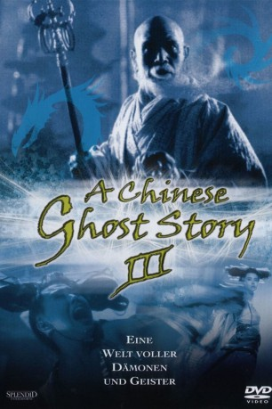

#9301 A Chinese Ghost Story III
 
 IMDB-Wertung: 6.8 / 10
IMDB-Wertung: 6.8 / 10  Metascore: 0
Metascore: 0 
Der junge Mönch Fong und sein buddhistischer Meister kämpfen sich in einer stürmischen Nacht durch die Wildnis. In einem verlassenen Tempel mitten im unheimlichen Bambuswald glauben sie, einen sicheren Platz für die Nacht gefunden zu haben. Doch der hohe Priester merkt sofort, dass der Wald voll von Dämonen und bösen Geistern ist.
Jahr: 1991
Dauer: 109 Minuten
FSK: 16
Land: Hong-Kong Studio: Cannon/VMPTonspuren:
Untertitel:
Auflösung: 1080p (1920x1080) Größe: 7680 MB
Genre: Action, Horror, Komödie, Fantasy
Regisseur: Siu-Tung Ching,  Hark Tsui
Hark Tsui
Drehbuch: Roy Szeto
Soundtrack: Romeo Díaz, James Wong
Darsteller:
Datei: X:\HD-Eastern-Collections\Chinese Ghost Story\Chinese Ghost Story III, A (1991, FSK16, 1920x1080).mkv seit 25.07.2018
Festplatte: HD Eastern+Western
 Es gibt insgesamt 7 Filme in der Gruppe 'HD-Eastern-Collections\Chinese Ghost Story'
Es gibt insgesamt 7 Filme in der Gruppe 'HD-Eastern-Collections\Chinese Ghost Story'